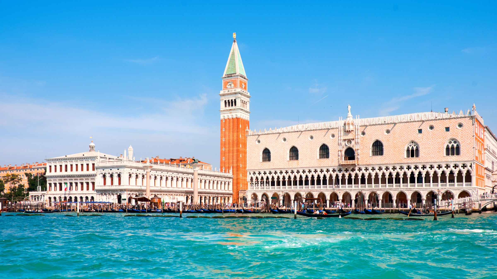

Le palais des Doges, ou palais Ducal se situe sur la place Saint-Marc
Ce bâtiment fut la résidence officielle des doges de la République de Venise et le lieu où siégaient ses institutions majeures.
Son histoire
Un premier palais des Doges exista durant la période de la République de Venise. Il a été détruit par un grand incendie, qui aura égalemment détruit la première basilique Saint-Marc. La construction de la Sala Nuovo du Grand Conseil débuta le 28 Décembre 1340. Il ne se terminera qu'en 1366. Le bâtiment fut décoré en 1365 par Guariento di Arpo de Padoue, que le doge Marco Cornaro avait fait venir. Le peintre réalisa autour du tribunal le Couronnement de la Vierge Marie au Paradis, tableau qui fut gravemment endommagé par l'incendie de 1577 et tomba dans l'oubli.
Plus d'infos sur Wikipédia
Le palais des Doges
Pour retourner à la page d'accueil : Ctrl + Entrée